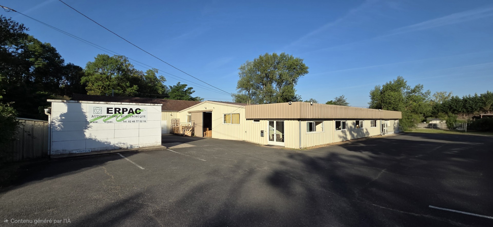

Qui sommes-nous ?
Une équipe passionnée au service de l'innovation industrielle, depuis plus de 35 ans.
Plus de 35 ans d'expertise industrielle
Depuis plus de 35 ans, ERPAC développe son savoir-faire dans les domaines de l'électronique, de l'électrotechnique et de l'automatisme industriel.
Création d'ERPAC
Début de l'aventure avec la création de l'entreprise à Cuffy, spécialisée dans la conception de solutions électroniques industrielles.
Déménagement à La Guerche-sur-l'Aubois
Installation dans de nouveaux locaux plus spacieux pour accompagner la croissance de l'entreprise et développer de nouvelles activités.
Agrandissement des locaux
Modernisation et extension significative de l'établissement pour répondre à l'évolution technologique et aux nouveaux défis industriels.

Une organisation au service de vos projets
Des ingénieurs et techniciens expérimentés, organisés pour vous accompagner à chaque étape.

Direction générale, responsable administratif et financier, responsable commercial, responsable technique, chef d'atelier, ingénieurs bureau d'études, techniciens production et qualité.
Confiez-nous vos projets
Que vous ayez un projet ponctuel ou clé en main, notre équipe transforme vos défis techniques en succès opérationnels.